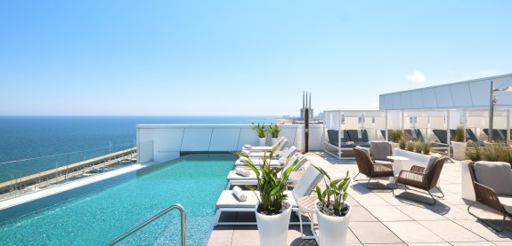
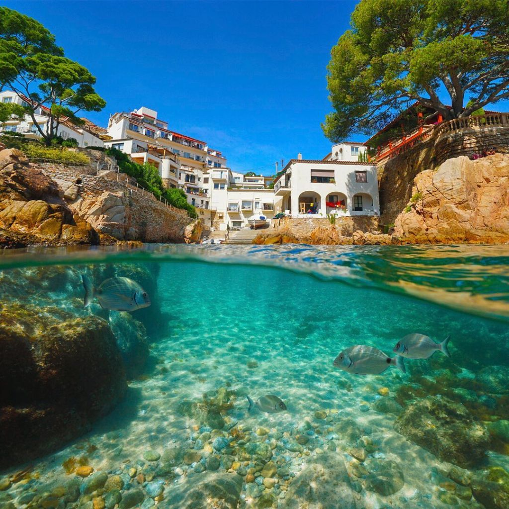
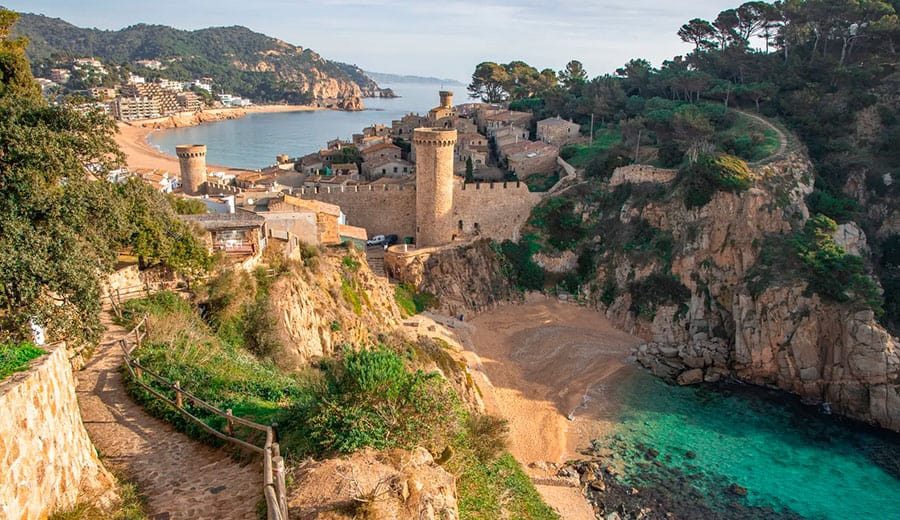

VUELTA A CLASE
¿Qué he hecho en el verano?

Definitivamente, he pasado mucha calor y he trabajado mucho. La imagen adjunta es una foto de mi verano, donde he pasado trabajando jaja.
He estado en:


Aquí puedes ver el recorrido de algunos de los lugares que he visitado este verano: Mi verano en la Costa Brava .